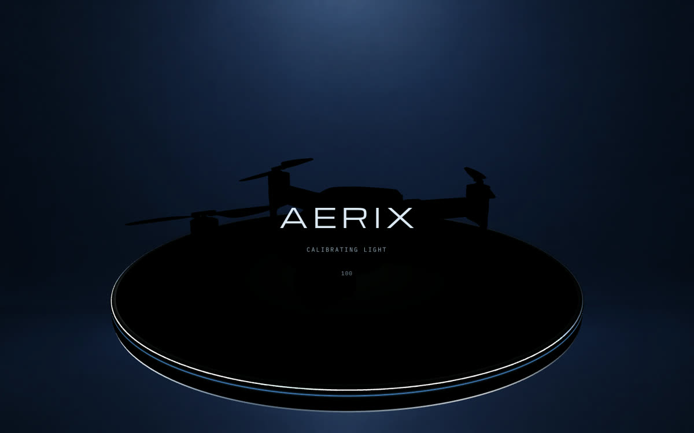

01
Loader inside the hero
Also called Preloader as an introInstead of a separate loading screen, the page loads inside the hero itself. The drone waits on its platform in the dark while a counter runs to 100, then the lights come up on the real scene, so you go straight from dark into light.
On the page · 00 Pre-flight, the first secondsCopy-paste prompt
Replace my loading screen with a loader that lives inside the hero. While the 3D model loads, show the real hero scene in near darkness with a small counter from 0 to 100 tied to the actual loading progress. When it reaches 100, bring the lights up in order: a rim light first to draw the silhouette, then the key light, over about 2.5 seconds with a slow ease-out. Keep the camera still and hand straight over to the hero, with no fade to another screen.